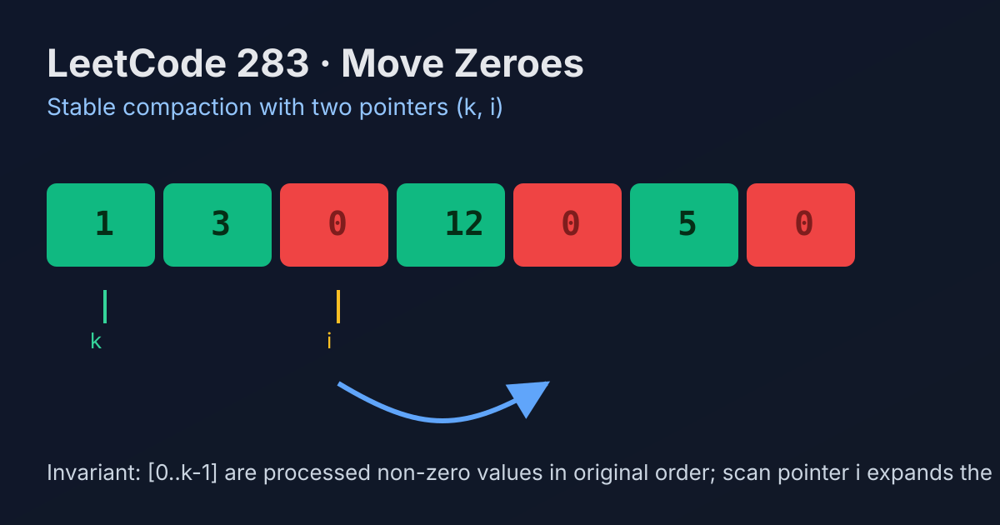

LeetCode 283: Move Zeroes (Two Pointers Stable Compaction)
LeetCode 283ArrayTwo PointersIn-placeToday we solve LeetCode 283 - Move Zeroes, a classic in-place stable partition problem.
Source: https://leetcode.com/problems/move-zeroes/

English
Problem Summary
Given an integer array nums, move all 0 values to the end while keeping the relative order of non-zero elements unchanged.
You must do this in-place, without returning a new array.
Key Insight
Use a write pointer k that always points to the next slot where a non-zero element should go. Scan the array once from left to right:
- if nums[i] != 0, swap nums[i] with nums[k] and increment k
- if nums[i] == 0, skip it
This keeps non-zero elements in original order (stable) and pushes zeroes to the tail naturally.
Brute Force and Limitations
A simple baseline is to create a new array: first copy all non-zero elements, then append zeroes. It is easy to implement but uses O(n) extra space, violating in-place preference.
Optimal Algorithm Steps
1) Initialize k = 0.
2) For each index i from 0 to n-1:
a) If nums[i] != 0, swap nums[k] and nums[i], then k++.
3) Finish scan; array already satisfies requirements.
Complexity Analysis
Time: O(n).
Space: O(1).
Common Pitfalls
- Writing non-zero values forward and forgetting to fill the rest with zeroes in alternative implementations.
- Reordering non-zero elements accidentally (breaking stability).
- Using extra arrays when interview requires in-place.
Reference Implementations (Java / Go / C++ / Python / JavaScript)
class Solution {
public void moveZeroes(int[] nums) {
int k = 0;
for (int i = 0; i < nums.length; i++) {
if (nums[i] != 0) {
int t = nums[k];
nums[k] = nums[i];
nums[i] = t;
k++;
}
}
}
}func moveZeroes(nums []int) {
k := 0
for i := 0; i < len(nums); i++ {
if nums[i] != 0 {
nums[k], nums[i] = nums[i], nums[k]
k++
}
}
}class Solution {
public:
void moveZeroes(vector<int>& nums) {
int k = 0;
for (int i = 0; i < static_cast<int>(nums.size()); i++) {
if (nums[i] != 0) {
swap(nums[k], nums[i]);
k++;
}
}
}
};class Solution:
def moveZeroes(self, nums: List[int]) -> None:
k = 0
for i in range(len(nums)):
if nums[i] != 0:
nums[k], nums[i] = nums[i], nums[k]
k += 1/**
* @param {number[]} nums
* @return {void}
*/
var moveZeroes = function(nums) {
let k = 0;
for (let i = 0; i < nums.length; i++) {
if (nums[i] !== 0) {
[nums[k], nums[i]] = [nums[i], nums[k]];
k++;
}
}
};中文
题目概述
给定整数数组 nums，把所有 0 移到数组末尾，同时保持非零元素的相对顺序不变。
要求原地修改，不能新建并返回另一个数组。
核心思路
使用写指针 k，表示“下一个非零元素应该放置的位置”。从左到右扫描：
- 若 nums[i] != 0，交换 nums[i] 与 nums[k]，然后 k++
- 若 nums[i] == 0，跳过
这样能保证非零元素顺序稳定，并在一次遍历中把 0 挪到末尾。
暴力解法与不足
基线做法是开新数组：先写入所有非零值，再补零。实现直观，但需要 O(n) 额外空间，不符合原地优化目标。
最优算法步骤
1）初始化 k = 0。
2）遍历 i = 0..n-1：
a）若 nums[i] != 0，交换 nums[k] 与 nums[i]，然后 k++。
3）遍历结束，数组即满足题意。
复杂度分析
时间复杂度：O(n)。
空间复杂度：O(1)。
常见陷阱
- 采用“前移非零”写法时忘记把尾部补零。
- 破坏非零元素相对顺序（不稳定）。
- 误用额外数组，违背原地要求。
多语言参考实现（Java / Go / C++ / Python / JavaScript）
class Solution {
public void moveZeroes(int[] nums) {
int k = 0;
for (int i = 0; i < nums.length; i++) {
if (nums[i] != 0) {
int t = nums[k];
nums[k] = nums[i];
nums[i] = t;
k++;
}
}
}
}func moveZeroes(nums []int) {
k := 0
for i := 0; i < len(nums); i++ {
if nums[i] != 0 {
nums[k], nums[i] = nums[i], nums[k]
k++
}
}
}class Solution {
public:
void moveZeroes(vector<int>& nums) {
int k = 0;
for (int i = 0; i < static_cast<int>(nums.size()); i++) {
if (nums[i] != 0) {
swap(nums[k], nums[i]);
k++;
}
}
}
};class Solution:
def moveZeroes(self, nums: List[int]) -> None:
k = 0
for i in range(len(nums)):
if nums[i] != 0:
nums[k], nums[i] = nums[i], nums[k]
k += 1/**
* @param {number[]} nums
* @return {void}
*/
var moveZeroes = function(nums) {
let k = 0;
for (let i = 0; i < nums.length; i++) {
if (nums[i] !== 0) {
[nums[k], nums[i]] = [nums[i], nums[k]];
k++;
}
}
};
Comments